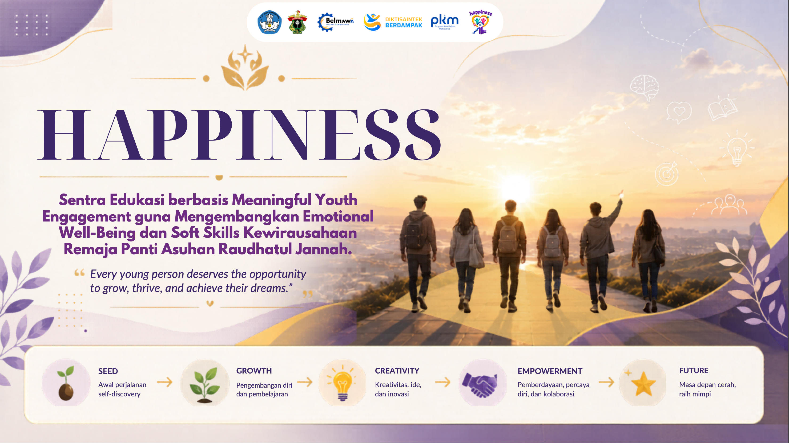
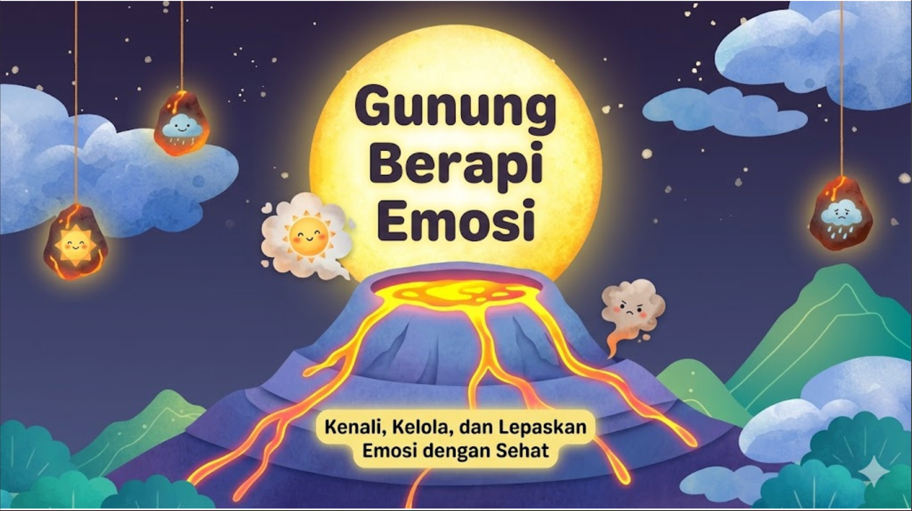
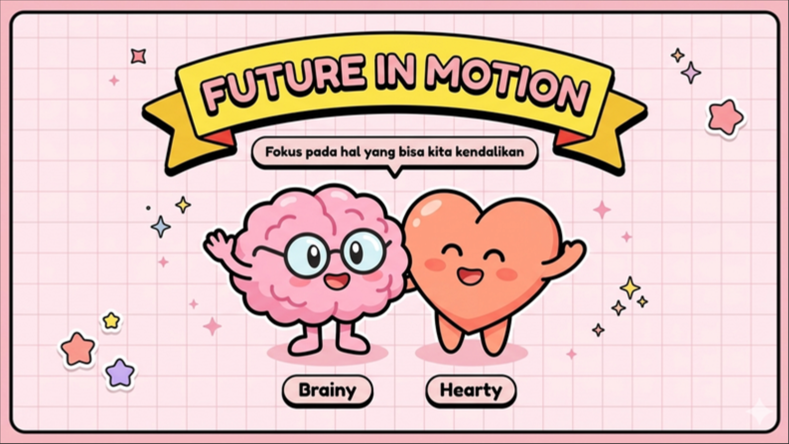
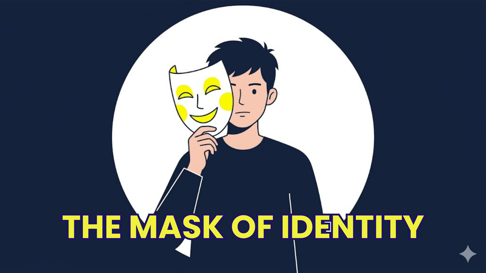
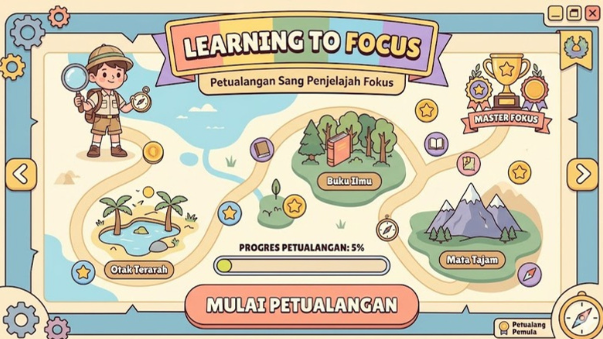
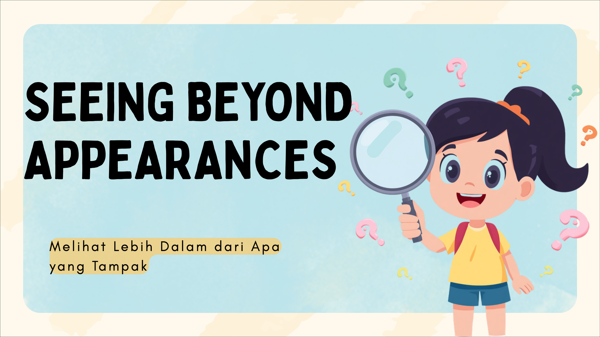
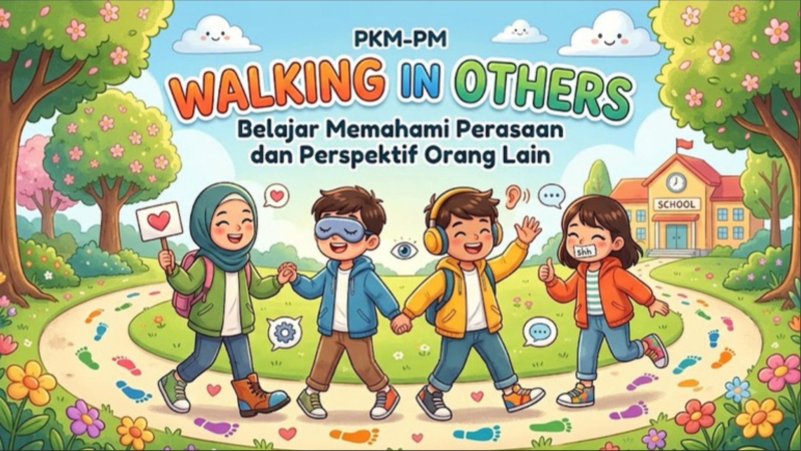
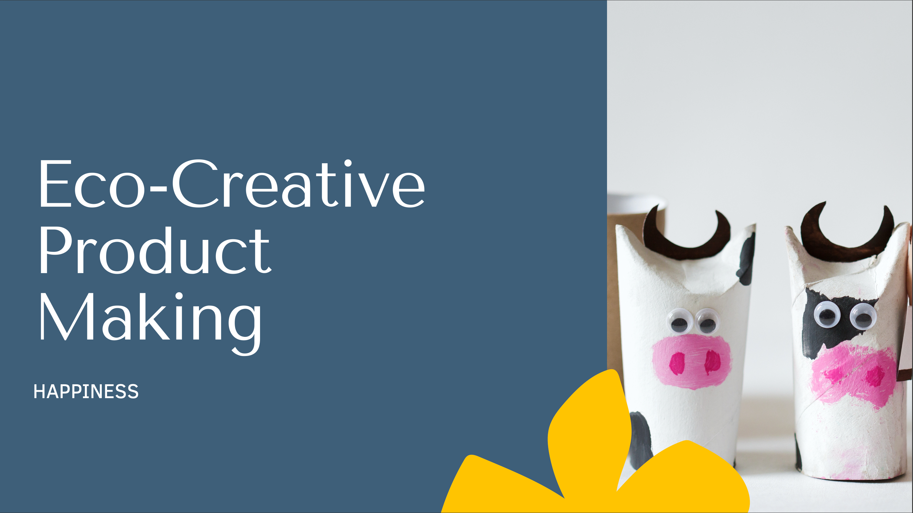

Pelajaran
Halaman ini akan berisi modul, materi, atau catatan pembelajaran.

Materi Pertemuan 1
Klik untuk membaca dokumen selengkapnya.

Materi Pertemuan 2
Klik untuk membaca dokumen selengkapnya.

Materi Pertemuan 3
Klik untuk membaca dokumen selengkapnya.

Materi Pertemuan 4
Klik untuk membaca dokumen selengkapnya.

Materi Pertemuan 5
Klik untuk membaca dokumen selengkapnya.
Materi Pertemuan 6
Klik untuk membaca dokumen selengkapnya.
Materi Pertemuan 7
Klik untuk membaca dokumen selengkapnya.
Materi Pertemuan 8
Klik untuk membaca dokumen selengkapnya.

Materi Pertemuan 9
Klik untuk membaca dokumen selengkapnya.
Materi Pertemuan 10
Klik untuk membaca dokumen selengkapnya.

Materi Pertemuan 11
Klik untuk membaca dokumen selengkapnya.
Materi Pertemuan 12
Klik untuk membaca dokumen selengkapnya.

Materi Pertemuan 13
Klik untuk membaca dokumen selengkapnya.
Materi Pertemuan 14
Klik untuk membaca dokumen selengkapnya.
Materi Pertemuan 15
Klik untuk membaca dokumen selengkapnya.